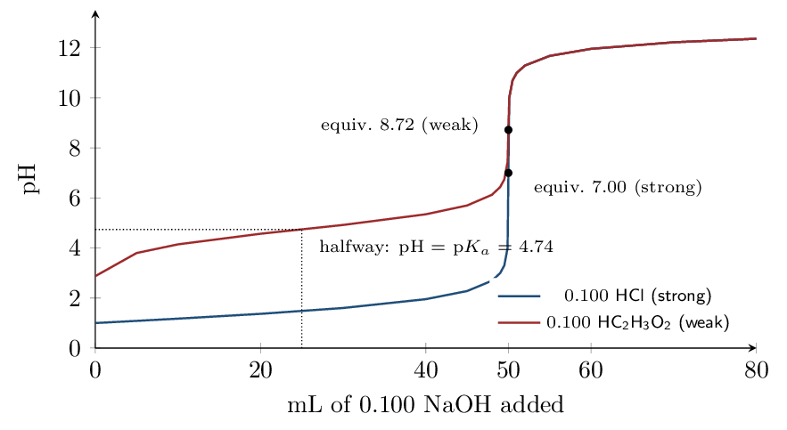

This is the back half of Unit 8 and the chapter that finishes it: §15.1 \(\to\) CED 7.12, §15.2 \(\to\) 8.4 and 8.8–8.9, §15.3 \(\to\) 8.10, §15.4 \(\to\) 8.5, §15.5 \(\to\) 8.5 (indicator choice).
It also closes a gap left open in Chapter 13. Unit 7's last two topics were missing from the equilibrium chapter: §15.1 supplies 7.12, the common-ion effect. Only 7.11 (Ksp) is still outstanding, and it lives in §16.1. Marked enrichment: §15.6 (polyprotic titrations). You are responsible for recognizing the shape of a polyprotic curve and what each plateau means; the multi-equivalence-point calculations are not on the framework.Nothing here is a new kind of problem. A buffer is a weak-acid equilibrium with the conjugate base already present, and a titration is a stoichiometry problem followed by whichever equilibrium is left over. The skill being built is deciding which of those two you are in.
The Common Ion Effect and What a Buffer Is Zumdahl §15.1–15.2
- Predict the effect of a common ion using Le Ch\^atelier's principle.
- Recognize a buffer and calculate its pH from \(K_a\) and the concentration ratio.
Read: Zumdahl §15.1–15.2 • PDF pp. 756–765
- pH of 0.10 M \(\ce{HC2H3O2}\) (\(K_a = 1.8\times10^{-5}\)):
- \(K_b\) for \(\ce{C2H3O2^-}\):
- If \(Q < K\), the equilibrium shifts:
- Adding a product to a system at equilibrium shifts it:
INSTRUCTION A • The common ion effect 25 min
Le Ch\^atelier, wearing a different hat ZUM §15.1
SP 6A common ion is an ion that is already a participant in the equilibrium you care about. Adding it shifts the position of that equilibrium — there is no new principle here at all. This is Le Ch\^atelier's principle applied to an acid ionization.
\[ \ce{HF(aq) <=> H+(aq) + F^-(aq)} \]Dissolve \(\ce{NaF}\) in this solution and you have added \(\ce{F-}\), a product. The equilibrium shifts , so the acid ionizes less and the solution is than the acid alone.
Compare 1.0 M \(\ce{HF}\) alone with a solution that is 1.0 M in \(\ce{HF}\) and 1.0 M in \(\ce{NaF}\). \(K_a(\ce{HF}) = 7.2\times10^{-4}\).
\(\ce{HF}\) alone. The usual weak-acid ICE: \(x = \sqrt{(7.2\times10^{-4})(1.0)} = 2.7\times10^{-2}\), so \(\mathrm{pH} = \mathbf{1.57}\) and the acid is \(\mathbf{2.7\%}\) ionized. With \(\ce{NaF}\) present. Now \([\ce{F-}]_0 = 1.0\), not zero: \[ K_a = \frac{x(1.0+x)}{1.0-x} \approx \frac{x(1.0)}{1.0} \quad\Longrightarrow\quad x = K_a\frac{[\ce{HF}]}{[\ce{F-}]} = 7.2\times10^{-4} \] so \(\mathrm{pH} = \mathbf{3.14}\) and the acid is only \(\mathbf{0.072\%}\) ionized.The common ion suppressed the ionization by a factor of about 37, and moved the pH by more than 1.5 units.
Notice what the algebra collapsed to: \[ [\ce{H+}] = K_a\,\frac{[\ce{HA}]}{[\ce{A^-}]} \] No square root, no quadratic. When both members of a conjugate pair are present in comparable amounts, the ICE table's \(x\) is negligible against both of them, and the whole problem reduces to a ratio. This single expression is the engine of the entire chapter.
GUIDED PRACTICE • Predicting the shift 15 min
- \(\ce{NaCN}\) is added to a solution of \(\ce{HCN}\). The pH
- \(\ce{NH4Cl}\) is added to a solution of \(\ce{NH3}\). The pH
- \(\ce{NaCl}\) is added to a solution of \(\ce{HC2H3O2}\). The pH
- Which ion in item 3 would have mattered?
INSTRUCTION B • What makes a solution a buffer 20 min
Definition and recognition ZUM §15.2
SP 6A buffered solution resists a change in pH when acid or base is added. It contains significant amounts of both members of a conjugate acid–base pair: a weak acid together with its conjugate base, or a weak base together with its conjugate acid.
Three ways a buffer shows up on the exam:
- Stated outright — \(\ce{HC2H3O2}\) plus \(\ce{NaC2H3O2}\), or \(\ce{NH3}\) plus \(\ce{NH4Cl}\).
- Made by partial neutralization — a weak acid plus less than enough strong base to consume it. The base converts part of the acid to its conjugate base, and what remains is a mixture of both.
- Hiding at the halfway point of a titration, which is item 2 with the amounts chosen so the two are equal.
A strong acid and its “conjugate base” is not a buffer. \(\ce{HCl}\) and \(\ce{NaCl}\) do nothing: \(\ce{Cl-}\) has no affinity for protons, so there is nothing to absorb added acid. A buffer requires a weak conjugate pair — the reversibility is the whole point.
APPLICATION • Ratio calculations 20 min
- Find \([\ce{H+}]\) and pH for a solution 0.10 M in \(\ce{HF}\) and 0.30 M in \(\ce{NaF}\).
- Identify each as a buffer or not, with a reason:
- \(\ce{HNO3}\) \(+\) \(\ce{NaNO3}\)
- \(\ce{NH3}\) \(+\) \(\ce{NH4Cl}\)
- \(\ce{HCN}\) \(+\) \(\ce{NaCN}\)
- \(\ce{NaOH}\) \(+\) \(\ce{NaCl}\)
A student says “\(\ce{NaF}\) makes the solution basic, so adding it to \(\ce{HF}\) raises the pH.” The conclusion is right but the reasoning is incomplete. Give the better explanation.
The Henderson–Hasselbalch Equation Zumdahl §15.2
- Derive and apply \(\mathrm{pH} = \mathrm{p}K_a + \log([\text{base}]/[\text{acid}])\).
- Explain why the ratio, not the absolute concentration, sets the pH.
Read: Zumdahl §15.2 • PDF pp. 763–767
- \([\ce{H+}] = K_a \times\)
- p\(K_a\) of \(\ce{HC2H3O2}\):
- \(\log(1) =\)
INSTRUCTION A • Deriving the equation 25 min
From \(K_a\) to a log equation ZUM §15.2
SP 5Start from the rearranged \(K_a\) expression and take \(-\log\) of both sides: \[ [\ce{H+}] = K_a\frac{[\ce{HA}]}{[\ce{A^-}]} \;\Longrightarrow\; -\log[\ce{H+}] = -\log K_a - \log\frac{[\ce{HA}]}{[\ce{A^-}]} \] Inverting the fraction flips the sign of its log, which gives the Henderson–Hasselbalch equation: \[ \boxed{\;\mathrm{pH} = \mathrm{p}K_a + \log\frac{[\ce{A^-}]}{[\ce{HA}]} = \mathrm{p}K_a + \log\frac{[\text{base}]}{[\text{acid}]}\;} \]
Read the equation as three separate statements:
- If \([\text{base}] = [\text{acid}]\), the log term is , so the pH equals .
- More base than acid \(\Rightarrow\) log term positive \(\Rightarrow\) pH .
- More acid than base \(\Rightarrow\) pH .
GUIDED PRACTICE • Straight substitution 15 min
- 0.25 M \(\ce{HC2H3O2}\) and 0.15 M \(\ce{NaC2H3O2}\):
- 0.20 M \(\ce{NH3}\) and 0.30 M \(\ce{NH4Cl}\), given \(K_a(\ce{NH4+}) = 5.6\times10^{-10}\):
- 0.100 M \(\ce{HOCl}\) and 0.100 M \(\ce{NaOCl}\) (\(K_a = 3.5\times10^{-8}\)):
Two routes give answers differing by \(0.01\): \(-\log(5.6\times10^{-10}) = 9.25\), while \(14.00 - \mathrm{p}K_b = 14.00 - 4.74 = 9.26\). Both are correct; the gap is rounding in the tabulated constants, nothing more. AP scoring accepts either. Do not chase the last digit — pick one route and be consistent within a problem.
INSTRUCTION B • Why the ratio is what matters 20 min
Dilution does not change a buffer's pH ZUM §15.2
SP 5Because only the ratio appears in the equation, two solutions with the same ratio have the same pH no matter how concentrated they are:
| Solution | \([\ce{A^-}]/[\ce{HA}]\) | pH | ||
|---|---|---|---|---|
| 5.0 | thinsp;M \(\ce{HC2H3O2}\) \(+\) 3.0 | thinsp;M \(\ce{NaC2H3O2}\) | \(3.0/5.0 = 0.60\) | 4.52 |
| 0.050 | thinsp;M \(\ce{HC2H3O2}\) \(+\) 0.030 | thinsp;M \(\ce{NaC2H3O2}\) | \(0.030/0.050 = 0.60\) | 4.52 |
Two consequences worth writing down:
- Diluting a buffer does not change its pH (to a good approximation) — both concentrations fall by the same factor, so the ratio is . Compare this with a weak acid alone, where dilution does raise the pH.
- You may use moles instead of molarity. Both species share the same volume, so the volume cancels out of the ratio. This saves a step on nearly every titration problem.
What is the pH of a solution made by dissolving 0.100 mol of \(\ce{HC2H3O2}\) and 0.100 mol of \(\ce{NaC2H3O2}\) in enough water to make 500 mL?
There is no need to compute either molarity. The mole ratio is \(0.100/0.100 = 1\), so \(\mathrm{pH} = \mathrm{p}K_a = \mathbf{4.74}\).
The answer would be identical in 2.0 L.
APPLICATION • Working backwards 20 min
- A buffer made from \(\ce{HOCl}\) and \(\ce{NaOCl}\) has pH 7.00. Find \([\ce{OCl-}]/[\ce{HOCl}]\).
- A \(\ce{NH3}\)/\(\ce{NH4Cl}\) buffer is 0.30 M in \(\ce{NH3}\) and 0.15 M in \(\ce{NH4Cl}\). Find the pH and say whether it lies above or below p\(K_a\), with a reason.
Two beakers hold acetate buffers. Beaker A is 1.0 M in each component; beaker B is 0.010 M in each. Which has the higher pH, and which is the better buffer?
Buffer Action and Buffering Capacity Zumdahl §15.2–15.3
- Calculate the pH of a buffer after a strong acid or base is added.
- Compare buffering capacity and choose components for a target pH.
Read: Zumdahl §15.2–15.3 • PDF pp. 761–770
- Henderson–Hasselbalch: pH \(=\)
- pH of a buffer with equal amounts of both components:
- Diluting a buffer changes its pH how?
INSTRUCTION A • Stoichiometry first, then equilibrium 25 min
The two-step method ZUM §15.2
SP 5This is the most important procedure in the chapter, and the one students most often try to skip.
- Stoichiometry step. Strong acid or strong base reacts completely. Added \(\ce{OH-}\) converts \(\ce{HA}\) to \(\ce{A-}\); added \(\ce{H+}\) converts \(\ce{A-}\) to \(\ce{HA}\). Work in (or mmol) and take the reaction to completion. No \(K\) appears in this step.
- Equilibrium step. Take the new amounts and put them into Henderson–Hasselbalch.
Do not put the added \(\ce{OH-}\) into an ICE table. Strong base does not sit at equilibrium with a weak acid — it consumes it. Mixing the two steps is the single most common way to lose every point on a buffer question.
1.00 L of solution is 0.50 M in \(\ce{HC2H3O2}\) and 0.50 M in \(\ce{NaC2H3O2}\). Add 0.010 mol of \(\ce{NaOH}\).
Start: ratio \(=1\), so pH \(= 4.74\). Step 1 — stoichiometry. \(\ce{OH^- + HC2H3O2 -> C2H3O2^- + H2O}\)| \(\ce{HC2H3O2}\) | \(\ce{OH-}\) | \(\ce{C2H3O2^-}\) | |
|---|---|---|---|
| before | 0.50 | 0.010 | 0.50 |
| after | 0.49 | 0 | 0.51 |
The buffer moved 0.02 pH units. Water moved 5.00.
GUIDED PRACTICE • The same buffer, acid added 15 min
Add 0.010 mol of \(\ce{HCl}\) to the same original buffer instead.
- Which component is consumed?
- New amounts: \(\ce{HC2H3O2}\) \(=\) , \(\ce{C2H3O2^-}\) \(=\)
- New pH:
- Same \(\ce{HCl}\) in 1.00 L pure water:
INSTRUCTION B • Capacity, and choosing a buffer 20 min
Why equal amounts buffer best ZUM §15.3
SP 6 Buffering capacity is how much added acid or base a buffer can absorb before its pH moves appreciably. Two things control it:- How much of each component is present. More is better — this is why dilution, which leaves the pH alone, still hurts the buffer.
- How lopsided the ratio is. Zumdahl's Table 15.1 makes the case with two solutions at very different ratios, each receiving 0.01 mol of \(\ce{H+}\):
| \([\ce{A^-}]/[\ce{HA}]\) before | after | change | pH shift | |||
|---|---|---|---|---|---|---|
| A 1.00 | thinsp;M / 1.00 | thinsp;M | 1.00 | 0.98 | 2.0% | \(4.74 \to 4.73\) |
| B 1.00 | thinsp;M / 0.01 | thinsp;M | 100 | 49.5 | 50.5% | \(6.74 \to 6.43\) |
Same amount of acid added; solution B's ratio changed as much. The lesson:
A buffer is useful over roughly \(\mathrm{p}K_a \pm 1\).
So to design a buffer for a target pH, choose a weak acid whose p\(K_a\) is as close as possible to that pH, then set the ratio with Henderson–Hasselbalch.
Which acid, and in what ratio?
| Acid | p\(K_a\) | \(|\mathrm{pH} - \mathrm{p}K_a|\) |
|---|---|---|
| \(\ce{HF}\) | 3.14 | 0.86 |
| \(\ce{HNO2}\) | 3.40 | 0.60 |
| \(\ce{HC2H3O2}\) | 4.74 | 0.74 |
| \(\ce{HOCl}\) | 7.46 | 3.46 (unusable) |
APPLICATION • Capacity reasoning 20 min
- 1.0 L of a buffer is 0.40 M in \(\ce{HC2H3O2}\) and 0.40 M in \(\ce{NaC2H3O2}\). Add 0.050 mol \(\ce{NaOH}\). Find the new pH.
- Explain why a buffer eventually fails if you keep adding base.
- Rank for buffering capacity at pH 4.74, highest first:
(i) 1.0 M/1.0 M acetate,
(ii) 0.10 M/0.10 M acetate,
(iii) 1.0 M/0.010 M acetate.
Blood is buffered near pH 7.4 by the \(\ce{H2CO3}\)/\(\ce{HCO3-}\) pair (p\(K_a \approx 6.4\)). Is this the ideal buffer for that pH? Why might the body use it anyway?
Titrations and pH Curves Zumdahl §15.4
- Calculate pH at any point of a strong–strong or weak–strong titration.
- Interpret the regions and landmarks of a titration curve.
Read: Zumdahl §15.4 • PDF pp. 770–785
- Buffer method, step 1:
- Buffer method, step 2:
- mmol \(=\)
- pH of a 0.10 M \(\ce{NaC2H3O2}\) solution:
INSTRUCTION A • Strong acid with strong base 25 min
Bookkeeping in millimoles ZUM §15.4
SP 5Since \(\text{mL}\times\text{molarity} = \text{mmol}\), working in mL and mmol avoids every unit conversion. The total volume is always .
50.0 mL of 0.200 M \(\ce{HNO3}\) (\(= 10.0\,\mathrm{mmol}\) \(\ce{H+}\)) titrated with 0.100 M \(\ce{NaOH}\). The reaction is \(\ce{H+ + OH^- -> H2O}\).
| mL NaOH | mmol \(\ce{OH-}\) | excess | pH |
|---|---|---|---|
| 0 | 0 | 10.0 mmol \(\ce{H+}\) | 0.70 |
| 10.0 | 1.00 | 9.00 mmol \(\ce{H+}\) | 0.82 |
| 20.0 | 2.00 | 8.00 mmol \(\ce{H+}\) | 0.94 |
| 50.0 | 5.00 | 5.00 mmol \(\ce{H+}\) | 1.30 |
| 100.0 | 10.0 | none — equivalence | 7.00 |
| 150.0 | 15.0 | 5.00 mmol \(\ce{OH-}\) | 12.40 |
Sample: at 20.0 mL, \([\ce{H+}] = 8.00/(50.0+20.0) = 0.114\,\mathrm{M}\), pH \(= 0.94\).
At equivalence the only species left are \(\ce{Na+}\), \(\ce{NO3-}\) and water. Neither ion reacts, so the pH is exactly 7.00.
INSTRUCTION B • Weak acid with strong base 20 min
Four regions, four different methods ZUM §15.4
SP 5This is the curve AP asks about most, and the reason is that each region needs a different calculation:
| Region | Major species | Method |
|---|---|---|
| Before any base | \(\ce{HA}\) only | weak-acid ICE, \(x=\sqrt{K_aC_0}\) |
| Before equivalence | \(\ce{HA}\) \(+\) \(\ce{A-}\) | buffer: Henderson–Hasselbalch |
| At equivalence | \(\ce{A-}\) only | weak-base ICE, \(K_b = K_w/K_a\) |
| After equivalence | \(\ce{A-}\) \(+\) excess \(\ce{OH-}\) | excess strong base alone |
50.0 mL of 0.10 M \(\ce{HC2H3O2}\) (\(= 5.0\,\mathrm{mmol}\)) with 0.10 M \(\ce{NaOH}\). Equivalence comes at 50.0 mL.
| mL | Region | Work | pH |
|---|---|---|---|
| 0 | weak acid | \(x=\sqrt{(1.8\times10^{-5})(0.10)}=1.34\times10^{-3}\) | 2.87 |
| 10.0 | buffer | \(4.74+\log(1.0/4.0)\) | 4.14 |
| 25.0 | halfway | \(4.74+\log(2.5/2.5)\) | 4.74 |
| 40.0 | buffer | \(4.74+\log(4.0/1.0)\) | 5.34 |
| 50.0 | equivalence | \([\ce{A^-}]=0.050\), \(K_b=5.6\times10^{-10}\) | 8.72 |
| 60.0 | excess base | \([\ce{OH-}]=1.0/110.0\) | 11.96 |

Both curves start and end in different places but converge after equivalence, because once the acid is gone the pH is set only by , which is the same in both flasks.
APPLICATION • Reading and calculating 20 min
- 100.0 mL of 0.050 M \(\ce{NH3}\) (\(K_b = 1.8\times10^{-5}\)) is titrated with 0.10 M \(\ce{HCl}\). Find the volume at equivalence and the pH there.
- For that same titration, what is the pH after
25.0 mL of \(\ce{HCl}\), and why can you write it down
with almost no work?
- A curve for a monoprotic acid shows its equivalence point at pH
9.1. Is the acid strong or weak? Justify.
Why does the buffer region of the weak-acid curve appear flat, while the strong-acid curve has no flat region at all?
Indicators and Titration as Analysis Zumdahl §15.5–15.6
- Select an indicator whose range matches a titration's equivalence point.
- Determine \(K_a\) and concentration from titration data.
Read: Zumdahl §15.5–15.6 • PDF pp. 785–792
- Equivalence pH, weak acid \(+\) strong base:
- Equivalence pH, weak base \(+\) strong acid:
- At the halfway point, pH \(=\)
INSTRUCTION A • How an indicator works 25 min
An indicator is just another weak acid ZUM §15.5
SP 6 An acid–base indicator is a weak acid, written \(\ce{HIn}\), whose two forms have different colors: \[ \ce{HIn(aq) <=> H+(aq) + In^-(aq)} \]Because it is a weak acid, it obeys the same equation everything else in this chapter obeys: \[ \mathrm{pH} = \mathrm{p}K_a + \log\frac{[\ce{In^-}]}{[\ce{HIn}]} \]
The eye needs about one part in ten of the new form before it registers a change in color. So, titrating an acid (going from \(\ce{HIn}\) toward \(\ce{In-}\)), the change first shows when \([\ce{In^-}]/[\ce{HIn}] = 1/10\): \[ \mathrm{pH} = \mathrm{p}K_a + \log\tfrac{1}{10} = \mathrm{p}K_a - 1 \] and titrating a base, at the reciprocal ratio, at \(\mathrm{p}K_a + 1\). Hence the general rule:
Bromthymol blue has \(K_a = 1.0\times10^{-7}\), yellow as \(\ce{HIn}\) and blue as \(\ce{In-}\). An acidic solution containing it is titrated with \(\ce{NaOH}\). At what pH does the color first visibly change?
\(\mathrm{p}K_a = 7.00\), and the change is visible at \([\ce{In^-}]/[\ce{HIn}] = 1/10\): \[ \mathrm{pH} = 7.00 + \log(0.10) = 7.00 - 1.00 = \mathbf{6.00} \] A greenish tint — a little blue mixed into the yellow. Its useful range runs from about 6 to 8.End point is not equivalence point ZUM §15.5
- The equivalence point is defined by .
- The end point is defined by .
They are different things. A good indicator makes them nearly coincide; a badly chosen one does not.
GUIDED PRACTICE • Choosing an indicator 15 min
| Indicator | approx. p\(K_a\) | useful range |
|---|---|---|
| Methyl orange | 3.7 | 3.1–4.4 |
| Methyl red | 5.3 | 4.4–6.2 |
| Bromthymol blue | 7.0 | 6.0–7.6 |
| Phenolphthalein | 9.1 | 8.2–10.0 |
- \(\ce{HCl}\) with \(\ce{NaOH}\), equivalence pH 7.00. Suitable indicators:
- \(\ce{HC2H3O2}\) with \(\ce{NaOH}\), equivalence pH 8.72:
- Why is methyl red wrong for item 2?
- \(\ce{NH3}\) with \(\ce{HCl}\), equivalence pH 5.36:
INSTRUCTION B • Titration as a measuring tool 20 min
Getting \(K_a\) and concentration from a curve ZUM §15.4
SP 4A titration curve carries two independent pieces of information:
- The equivalence volume gives the amount — and therefore the concentration — of the unknown.
- The pH at half that volume gives , and hence \(K_a\).
25.00 mL of a monoprotic acid requires 18.50 mL of 0.1050 M \(\ce{NaOH}\) to reach equivalence. The pH at 9.25 mL is 4.20.
Concentration. \(n = (18.50)(0.1050) = 1.943\,\mathrm{mmol}\), so \(C = 1.943/25.00 = 0.0777\,\mathrm{M}\). \(K_a\). 9.25 mL is exactly half of 18.50 mL, so this is the halfway point: \(\mathrm{p}K_a = 4.20\) and \(K_a = 10^{-4.20} = \mathbf{6.3\times10^{-5}}\). Sanity check. A \(K_a\) near \(10^{-5}\) is a typical weak organic acid, and it predicts an equivalence point above 7 — consistent with titrating a weak acid with a strong base.Polyprotic curves ZUM §15.6
A polyprotic acid is titrated one proton at a time, giving one equivalence point per ionizable proton. Each addition of \(\ce{OH-}\) strips off the next proton in turn: \[ \ce{H3PO4 -> H2PO4^- -> HPO4^2- -> PO4^3-} \] Each step consumes the same number of moles of base, so the equivalence points are evenly spaced along the volume axis — which is how you count the protons from a curve. Between them sit buffer plateaus.
You should be able to read a polyprotic curve and say how many acidic protons the acid has. Calculating pH at the second and third equivalence points is beyond the current CED.
APPLICATION • Putting it together 20 min
- A 25.0 mL sample of 0.100 M \(\ce{HC2H3O2}\) is titrated with 0.100 M \(\ce{NaOH}\). After 10.0 mL the pH is measured. Predict it.
- An indicator has \(K_a = 1\times10^{-5}\). Over what pH range does it
change color, and which titration in this block would it suit?
- A student titrating acetic acid with \(\ce{NaOH}\) uses methyl orange
and reports a concentration that is far too low. Explain the
source of the error.
State the one question you should ask before starting any titration calculation, and why it settles the method.